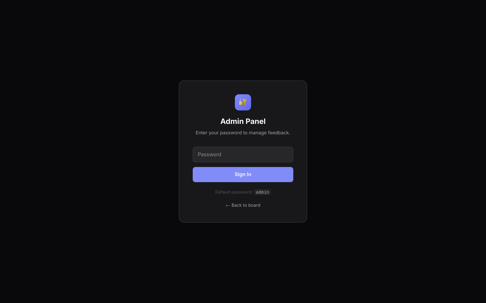
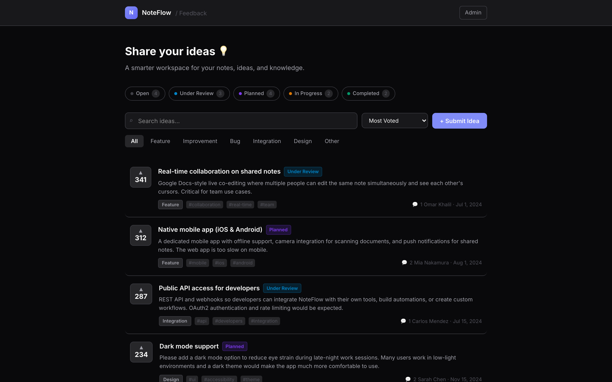
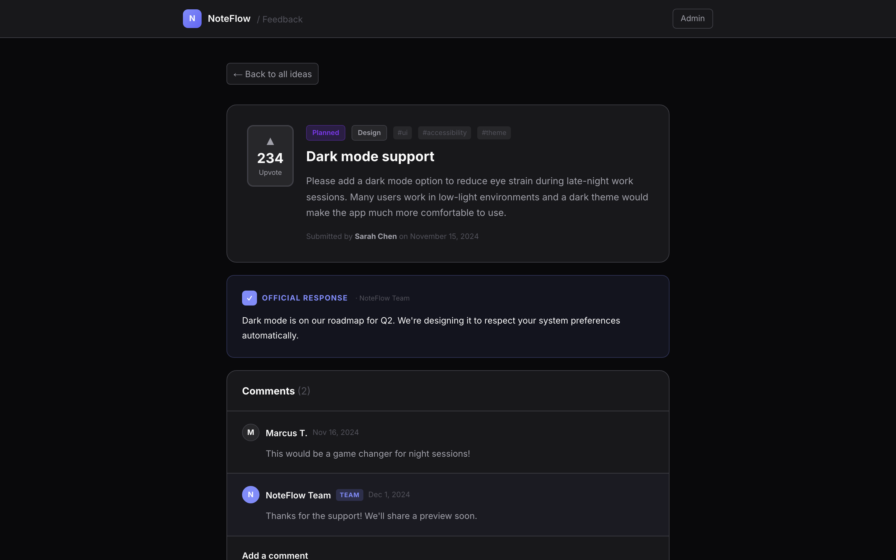

Self-hosted feature request board as a free Canny alternative — voting, status updates, roadmap view, and admin moderation tools.



# Feedback — Promo Kit for Affiliates
**Product:** Feedback — Self-hosted feature request board, Canny alternative
**Price:** $49 one-time
**Your link:** https://whop.com/myfileapps/feedback (replace with your affiliate URL)
**Commission:** 50% per sale = ~$24.50
---
## Screenshots
- `home.png` — Public feedback board with status filters, voting, search, categories
- `item.png` — Item detail with comments, status, vote count
- `admin.png` — Admin moderation panel for status changes and replies
---
## Twitter / X (10 posts)
1. ```
Canny costs $50/mo minimum.
This Canny clone = $49 once. Self-hosted. Yours forever.
{your_link}
```
2. ```
Stop paying for Canny / Productboard / Frill.
Feedback template = $49, full Next.js source.
Public board, voting, status, comments, admin.
{your_link}
```
3. ```
Indie devs / SaaS founders:
Public roadmap board with feature requests + voting.
Self-hosted. $49 one-time. {your_link}
```
4. ```
Built a Canny clone for my SaaS in an afternoon.
This $49 template handles voting, statuses (Under Review / Planned / In Progress / Completed), categories, comments.
{your_link}
```
5. ```
Public feedback boards drive 30%+ of new feature signal.
This template gets you one for $49. Once.
{your_link}
```
6. ```
- Voting
- Statuses
- Categories
- Search
- Admin moderation
- Comments
$49 once, no monthly fee, full source. {your_link}
```
7. ```
Best $49 I spent this quarter:
A public feature request board for my product. No more Notion-based "wishlist" mess.
{your_link}
```
8. ```
Feedback template — full Next.js source, $49 one-time.
Self-hosted Canny alternative. Voting + statuses + comments.
{your_link}
```
9. ```
Tired of paying $50-$200/mo for "feature voting"?
This is the $49 once version.
{your_link}
```
10. ```
Every SaaS should have a public roadmap.
This template builds one for you in 10 minutes. $49.
{your_link}
```
---
## Reddit (5 posts)
### r/SideProject
```
Title: Built a Canny clone for my product with this $49 template
Spent $49 on Feedback — full Next.js source. Public board with voting, 5 statuses (Open / Under Review / Planned / In Progress / Completed), categories, comments, admin panel.
Replaced my "feature wishlist" Notion DB. Users actually engage now.
{your_link}
```
### r/Entrepreneur
```
Title: $49 one-time Canny alternative — self-hosted feature voting
Just used Feedback template — full source. Self-hosted feature request board for SaaS. Voting, statuses, categories, admin.
For founders who don't want to pay $50-$200/mo for a "vote on this feature" page.
{your_link}
```
### r/SaaS
```
Title: Self-hosted Canny / Productboard alternative — $49 one-time
For other founders: Feedback is a Next.js template. Public board with voting + statuses + comments + admin moderation. Full source.
Hosted on Vercel for free. Replaces $50-$200/mo subscriptions.
{your_link}
```
### r/passive_income
```
Title: $49 feedback template — building "your roadmap" service for SaaS founders
Found this template. Offering "your custom feedback board" setup service to SaaS founders for $199. 5 deals in month 1. Template paid back many times.
{your_link}
```
### r/webdev
```
Title: Public feedback board template (Next.js + TS) — $49 one-time
Clean code:
- 5 statuses (Open / Under Review / Planned / In Progress / Completed)
- Voting + sort by Most Voted / Newest
- Categories + filters
- Comments per item
- Admin panel for status moderation
- Full search
{your_link}
```
---
## Telegram / Discord DM (3 templates)
### Cold DM #1
```
Hey — saw you're building a SaaS / community.
Found a $49 one-time Canny clone. Public voting board, statuses, comments, admin. Full Next.js source.
Probably cheaper than your Canny bill. {your_link}
```
### Cold DM #2
```
Quick one — I get 50% commission if you grab this $49 feedback template.
It's solid: voting, 5 statuses, categories, search, comments, admin moderation. Self-hosted.
{your_link}
```
### Repost in groups
```
For SaaS founders / community builders:
Feedback template — $49 one-time
Self-hosted Canny alternative
Voting + statuses + admin
{your_link}
```
---
## TikTok / Reels script (30s)
```
[Hook 0-3s — show feedback board with vote counts]
"Canny is $50/mo. For voting on feature requests."
[3-10s — show statuses + categories + filter]
"This template = same thing. 5 statuses, voting, filters, search."
[10-20s — show item detail with comments + admin reply]
"Comments. Admin replies. Real conversation with users."
[20-27s — show admin moderation panel]
"Move items between statuses. Pin. Reply. All built in."
[27-30s — CTA]
"$49 one-time. Link in bio."
```
---
## Hashtags
```
#canny #productroadmap #saas #indiedev #nextjs #typescript #onetimepurchase #productmanagement #microsaas #webdev #featurevoting #publicroadmap
```
---
## Where to post (priority order)
1. **Twitter/X** — reply under "Canny is too expensive" / SaaS founder threads
2. **Reddit** — r/SideProject, r/SaaS, r/Entrepreneur, r/webdev
3. **Indie Hackers** — show & tell with the public board screenshot
4. **TikTok** — "POV: cancelling Canny"
5. **Telegram** — SaaS founder channels
6. **LinkedIn** — product manager / founder communities
7. **Facebook groups** — SaaS founders, indie hackers